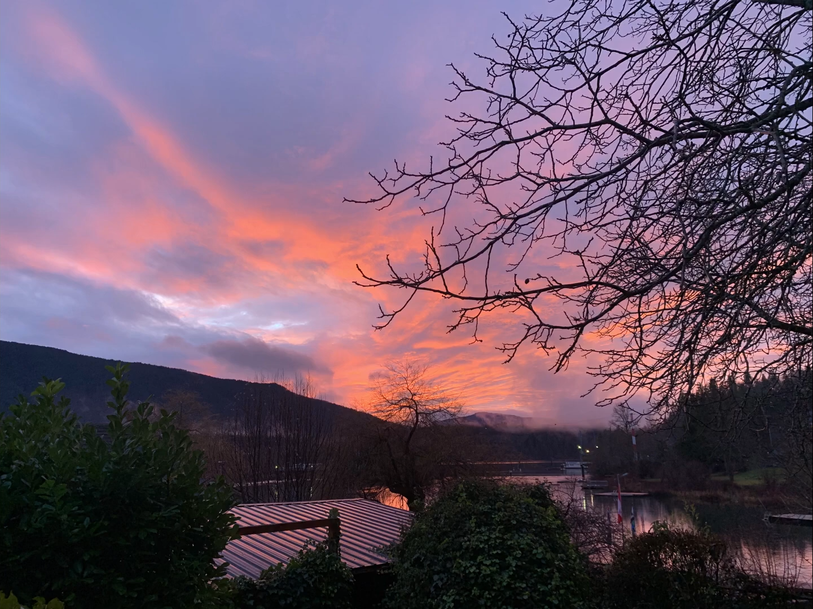

Music Page
I started making music around feburary of 2022. I have a friend who is amazing at it, and has been teaching me how to make music using FL Studio, a digital audio workspace. As I have gotten better I began to see more and more about music that I had never witnessed before, and it was like my ears had been reborn. My joy of music became deeper and deeper the more I learned. I want to continue making mroe and more so I can keep discovering more about music.
